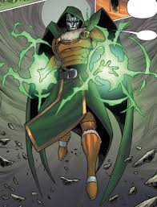
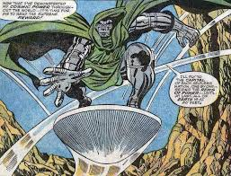
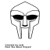

Times Doom trancended into a GOD!
 The Doctor Doom from Earth-TRN157 fuses Doom and Ego The Living Planet, giving him the ability to
travel through space at the speed of light and manipulate matter on a cosmic scale.
In this reality, Doom transferred his consciousness into a planet as he was getting older and sought
to cheat death.
This Doom variant stood with the most powerful cosmic beings in Marvel Comics. While he may not
appear in the MCU, Doom's ambition to acquire greater and greater power certainly will.
The Doctor Doom from Earth-TRN157 fuses Doom and Ego The Living Planet, giving him the ability to
travel through space at the speed of light and manipulate matter on a cosmic scale.
In this reality, Doom transferred his consciousness into a planet as he was getting older and sought
to cheat death.
This Doom variant stood with the most powerful cosmic beings in Marvel Comics. While he may not
appear in the MCU, Doom's ambition to acquire greater and greater power certainly will.
In What If? #52, Doctor Doom becomes Sorcerer Supreme after he seeks out the Ancient One as a young
man.
Armed with the Eye of Agamotto, he gains extreme magical power.
This Doom variant possesses all the magical sensibility and capabilities Doctor Strange does,
including the ability to travel between dimensions.
In Fantastic Four #60, Doctor Doom steals the Power
Cosmic from the Silver Surfer and for a brief time, gains the incredible power conferred on him from
Galactus.
With this power, Doom could fly through space, manipulate matter, and generate enormous energy
bursts.
He also possessed cosmic awareness, which allowed Doom to perceive time and space on a god-like
level.
He wasn't omnipotent, though. When he tried to leave Earth, the cosmic barrier Galactus erected to
trap the Silver Surfer stripped his powers away.
 Released in 1999, six years after Doom’s little brother
died, this album marks the birth of the legendary MF Doom and the return of Daniel Dumile to the
music industry after a break with this new persona.
This new identity came due to the depression Dumile suffered after Dingilizwe (his brother) died,
and some of the music industry shenanigans.
The mask, he declared, represents his early experiences in the music industry, which had left him
‘scarred’ for life and that he was now compelled to cover his face to hide the harm
Released in 1999, six years after Doom’s little brother
died, this album marks the birth of the legendary MF Doom and the return of Daniel Dumile to the
music industry after a break with this new persona.
This new identity came due to the depression Dumile suffered after Dingilizwe (his brother) died,
and some of the music industry shenanigans.
The mask, he declared, represents his early experiences in the music industry, which had left him
‘scarred’ for life and that he was now compelled to cover his face to hide the harm

My life is changing. When I was young, I made a fateful choice.
I chose science over sorcery. And I wanted to choose again. Thus, I made a pact.
I conjured a cabal of netherdemons who claimed they would make me the magician I could have been... and greater besides.
But as is too often true demons, there was a barter involved. One condition. I had to sacrifice something of indescribable value. Something irreplaceable. Something only you could give me. Farewell, my love. Dear, dear Valeria. I will miss you more than any will ever imagine... ...but I will always hold you close to me.
I conjured a cabal of netherdemons who claimed they would make me the magician I could have been... and greater besides.
But as is too often true demons, there was a barter involved. One condition. I had to sacrifice something of indescribable value. Something irreplaceable. Something only you could give me. Farewell, my love. Dear, dear Valeria. I will miss you more than any will ever imagine... ...but I will always hold you close to me.
`-Lord Emperor Viktor Von Doom.
It's time the world knows who rules this universe!
Click the button to deploy the most destructive Doomsday device ever known in this realm!
Click the button to deploy the most destructive Doomsday device ever known in this realm!